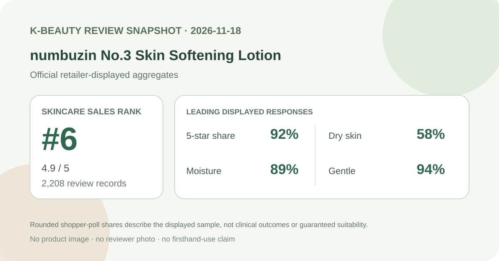
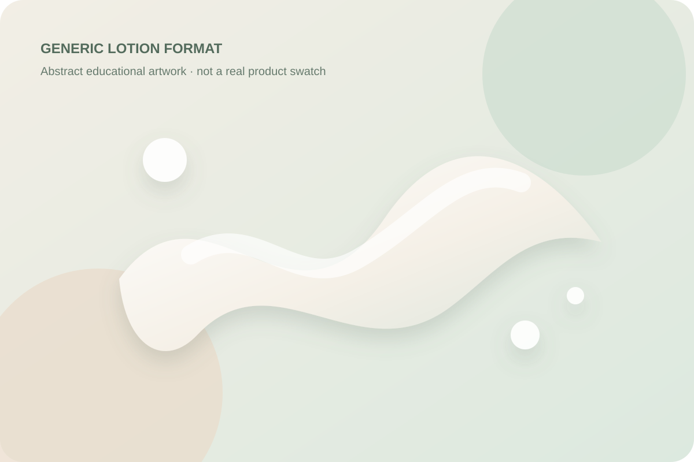

Data captured November 18, 2026. A Korean K-beauty retail platform displayed “넘버즈인 3번 보들보들 결 화잘먹 로션 150ml 기획 (+100ml).” This article uses “numbuzin No.3 Skin Softening Lotion” as a concise English label. It relies only on the retailer's ranking, title, aggregate rating, star shares, and displayed shopper polls. It does not copy or translate individual review text, names, or photos, and it makes no claim of firsthand use.

The short version: numbuzin No.3 Skin Softening Lotion appeared at number 6 in the captured skincare sales ranking. The ranking, product, and review identities agreed, and the official statistics displayed 4.9 out of 5 from 2,208 records. Five-star ratings accounted for 92% of the shown distribution. Dry skin led the skin-type poll at 58%, moisture led the concern panel at 89%, and gentle led the irritation panel at 94%. Those are useful signals about the listing, but they are not proof of skin compatibility, makeup performance, or a measured treatment effect.
The official statistics showed an average of 4.9 stars from 2,208 review records. That is a meaningful amount of storefront feedback and a better base for describing the listing than a newly launched page with only a handful of responses. It supports a narrow conclusion: the displayed rating direction was strongly favorable when captured.
It does not establish why the listing scored well. Retail ratings can reflect price, packaging, delivery, gifts, expectations, scent, texture, routine fit, and the formula itself. They also reflect who purchased, who chose to post, how records were linked to this promotional configuration, and how the platform moderated or displayed feedback. The interface did not fully disclose those mechanisms.
A high average also cannot answer whether the product will suit a particular skin condition or routine. The 2,208 records are not a randomized sample, and the captured display does not separate verified current-formula users from every other possible listing context. The count is valuable descriptive evidence, not a probability of success for the next buyer.
The displayed star shares were 92% five-star, 6% four-star, 2% three-star, and 0% for both two- and one-star. The rows total 100%. This distribution supports the 4.9 average and shows that the visible score was not being held up by an even spread of ratings.
The platform showed rounded percentages rather than raw counts for each star row. Converting those shares into exact review totals would therefore create false precision. A zero-percent row can also hide a very small number after rounding, so it should not be read as proof that no unfavorable rating exists.
The skin-type panel displayed 58% dry, 34% combination, and 7% oily. The rows total 99%, consistent with independent whole-number rounding. Dry skin was clearly the largest represented response, but this is not evidence that dry skin receives the best outcome.
Self-reported skin type can vary with season, climate, cleansing, medication, hormones, and current irritation. The platform did not show the poll denominator, so the response base may differ from the 2,208 rating records. The correct interpretation is representation: more displayed respondents selected the dry-skin label than either alternative.
The concern poll showed 89% moisture, 7% soothing, and 4% wrinkle or brightening. Moisture was therefore the dominant shopper-selected label. This aligns with the product's lotion format as a buying-context signal, but it is still a perception poll rather than a measurement.
The 89% share is not a corneometer reading, transepidermal-water-loss result, duration test, or controlled before-and-after comparison. It does not quantify how much hydration changed or show that the lotion caused the response. The smaller soothing and wrinkle/brightening rows likewise are not clinical endpoints and should not be converted into treatment claims.
The irritation panel displayed 94% gentle, 5% ordinary, and 0% felt irritation. The total is 99% after rounding. Gentle was overwhelmingly the leading response, which is useful context for how the captured sample answered the retailer's prompt.
It is not a 94% guarantee of tolerance. The aggregate cannot screen for allergy, fragrance sensitivity, active dermatitis, a compromised barrier, prescription use, or interactions with exfoliants, retinoids, acne treatments, sunscreen, and makeup. A zero-percent irritation row may also conceal rounding. Current label instructions and individual patch-testing decisions matter more than a storefront poll for someone with known sensitivities.
The reliable official response exposed a rating distribution and three shopper-poll panels, but no stable retailer-generated anonymous topic or sentiment summary suitable for this article. I therefore did not infer themes by reading individual comments. No reviewer sentence, username, profile detail, or user photograph is reproduced or translated here.
This omission keeps the evidence boundary clear. The aggregates do not establish scent, slip, absorption speed, tack, finish, pilling, makeup compatibility, or repeat-purchase motivation. Those topics would require either a dependable aggregate summary or separate testing, neither of which was available in this capture.

The retailer identifies the item as a lotion. In general skincare language, a facial lotion is a leave-on emulsion that may be used after lighter toner, essence, or serum steps. That broad format description does not verify this product's thickness, spread, cushion, absorption, finish, fragrance, occlusiveness, or behavior beneath sunscreen and makeup.
I did not open, smell, spread, layer, or wear the formula. The local illustration uses abstract vector shapes and does not reproduce the bottle, formula color, or a real swatch. Sensory behavior depends on the current formula, amount, application method, skin condition, previous routine steps, temperature, humidity, and what is applied afterward.
“Skin softening” is a readable rendering of the product name, while the Korean listing also uses a makeup-preparation phrase. Those words do not establish a measured change in skin texture, pore appearance, roughness, hydration, or makeup wear. The captured polls contain no instrument reading, blinded grading, comparison group, wear duration, or standardized photography.
This article also does not infer any ingredient concentration or mechanism. No complete formula audit, ingredient assay, penetration study, or controlled comparator was part of the captured data. Readers who need current ingredient, allergen, or regional-label information should consult the package or brand's current disclosure rather than treating a retail name as scientific evidence.
Rank 6 describes one moment in a Korean K-beauty retail platform's skincare sales list. It is not a clinical ranking or a declaration that this is the sixth-best skincare product. Advertising, gifts, influencer exposure, inventory, seasonality, discounts, and short-term demand can move a listing rapidly.
The captured page displayed a 150 ml lotion with a 100 ml promotional addition, a ₩30,000 reference price, and a ₩21,400 promotional price. Those details can change independently of the review data. Before buying, confirm the current formula, seller, exact size, gift conditions, stock, expiry information, return terms, and checkout price on the live listing.
numbuzin No.3 Skin Softening Lotion had a coherent captured storefront profile: rank 6, a 4.9 average from 2,208 records, a 92% five-star share, strong dry-skin representation, an 89% moisture response, and a 94% gentle response. The review base is substantial enough to make those descriptive signals worth noting.
The limits are equally important. The data cannot verify a “softening” effect, predict makeup performance, prove hydration, establish gentleness for an individual, or reveal ingredient concentrations. The most defensible use of this snapshot is to inform a shortlist and generate better questions before purchase—not to replace formula checks, personal compatibility testing, or clinical evidence.
Source: Olive Young Korea product listing and official aggregate review statistics, captured November 18, 2026. Open the source product page.
← Back to all analyses · Review-volume rankings · Skin-poll representation